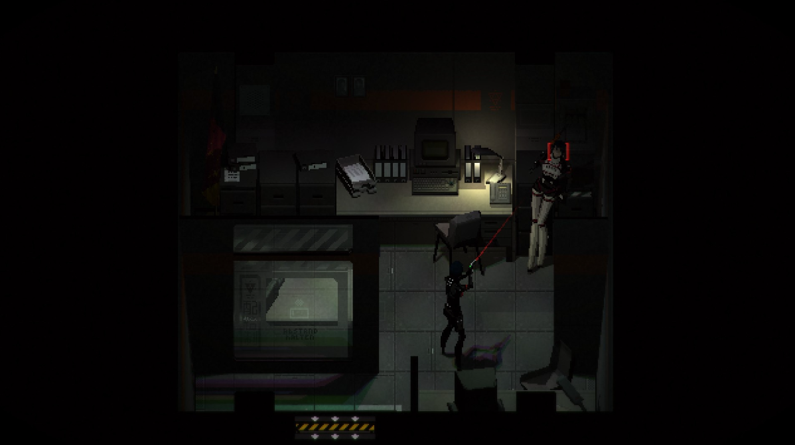
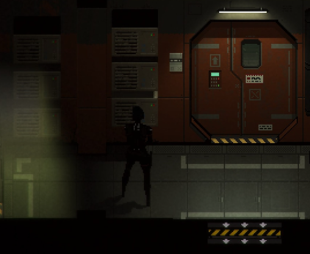

Signalis
Signalis is a Silent Hill inspired pixel graphics survival horror game set in space.

The setting, atmosphere, graphics, and lore are all really well done as its engaging story although by the end I had no idea what was going on. Defintely one where you should try to pay attention and come to your own conclusions about whats happening.
The gameplay works pretty well with its exploration, top down shooter, resource managment. It's also quite replayable.
Would definitely recommend for survival horror fans.
